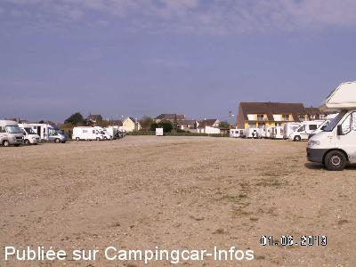
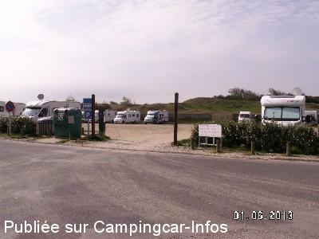
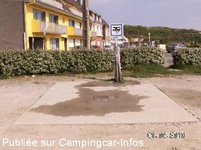
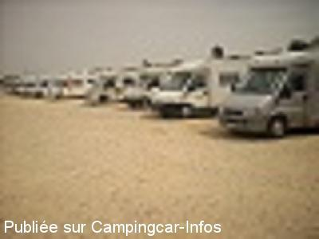
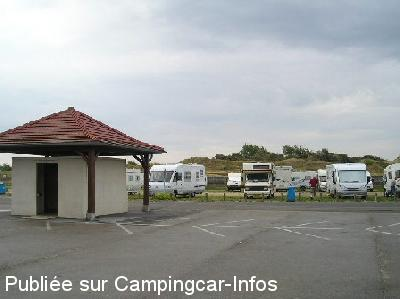

ASN = Aire de services avec stationnement nuit possible de :
FORT MAHON PLAGE
(N° 631)
Accès/adresse :
Rue de la Bistouille
80120 FORT MAHON PLAGE
80120 FORT MAHON PLAGE
Latitude : (Nord) 50.33861° Décimaux ou 50° 20′ 18′′
Longitude : (Est) 1.555° Décimaux ou 1° 33′ 17′′
Tarif : 2016
Stationnement : 10 € en monnaie
Gratuit pour les personnes à mobilité réduite
Services gratuits
Type de borne : Plateforme
Services :


Tous commerces à proximité
Autres informations :
Endroit très agréable
Très proche de la plage

Le 18/08/2014 par GILLES

Le 18/08/2014 par Gilles Boucart

Le 18/08/2014 par Gilles

Le 15/05/2011 par

Le 25/08/2006 par Claude S.88
de
astro
le 29/04/2016 :
NPA Fab
une honte de payer 10euros pour un terrain vague
moi je ne viens plus ici ;on nous prends pour des pigeons camping car cochon de payeur
NPA Fab
une honte de payer 10euros pour un terrain vague
moi je ne viens plus ici ;on nous prends pour des pigeons camping car cochon de payeur
de
Ralph
le 12/11/2014 :
Nous avons séjourné 2 nuits au début de Septembre. Aire très occupé.
Gratuit pour les détenteurs de badge bleu, le seul endroit où je l'ai vu en France. Environ une heure de Calais. Recommandé.
Stayed 2 nights beginning of September. Aire very busy.
Free of charge for blue badge holders, the only place I've seen this in France. About an hour from Calais. Reccomended.
Nous avons séjourné 2 nuits au début de Septembre. Aire très occupé.
Gratuit pour les détenteurs de badge bleu, le seul endroit où je l'ai vu en France. Environ une heure de Calais. Recommandé.
Stayed 2 nights beginning of September. Aire very busy.
Free of charge for blue badge holders, the only place I've seen this in France. About an hour from Calais. Reccomended.
de
BP
le 11/08/2014 :
Toujours beaucoup de monde, en juillet/aout.
La municipalité met à disposition des sacs pour ramasser les crottes de nos chiens,très bien,dommage que la surveillance à cheval dans les rues ,ne ramasse pas le crottin.
Toujours beaucoup de monde, en juillet/aout.
La municipalité met à disposition des sacs pour ramasser les crottes de nos chiens,très bien,dommage que la surveillance à cheval dans les rues ,ne ramasse pas le crottin.
de
jiji02
le 28/07/2014 :
Passage le 26 juillet 2014 à midi.
Plus une place, les CC sont les uns sur les autres.
Certains CC sont là depuis plus d'une semaine.
Un grand emplacement est réservé au bus.
A éviter en juillet et août
Passage le 26 juillet 2014 à midi.
Plus une place, les CC sont les uns sur les autres.
Certains CC sont là depuis plus d'une semaine.
Un grand emplacement est réservé au bus.
A éviter en juillet et août
de
René LEMAIRE
le 22/07/2014 :
Avons passé le WE du 20 au 21/07/2014 . toujours conviviale, surtout les commerçants. Très beau feu d'artifice en l'honneur des Belges et bal populaire sur la digue . Le seul bémol, l'état du parking, boueux lorsqu'il pleut , pas d'électricité. Pour le prix et au vu des nombreux camping caristes, à revoir par la municipalité, ce qui est également l'avis des commerçants, 9 Euros, c'est trop pour le peu de service. Bon WE passé quand même
Avons passé le WE du 20 au 21/07/2014 . toujours conviviale, surtout les commerçants. Très beau feu d'artifice en l'honneur des Belges et bal populaire sur la digue . Le seul bémol, l'état du parking, boueux lorsqu'il pleut , pas d'électricité. Pour le prix et au vu des nombreux camping caristes, à revoir par la municipalité, ce qui est également l'avis des commerçants, 9 Euros, c'est trop pour le peu de service. Bon WE passé quand même
de
Gillou
le 16/07/2014 :
Air de service luxueux par le prix mais pas en rapport du terrain et des services, il a l'avantage d'être en centre-ville, on paye notre contribution en monnaie, pas de CB, pour faire de la monnaie il suffit d'aller à l'office de tourisme, les commerçants sont sympas, ils nous ont fait de la monnaie chez Vival (petite épicerie à côté du boucher face au casino),
PS: les airs de service ressemble de + en + à des terrains de camping long séjour, que des endroits de passage de 2 ou 3 nuitées et tous ces môme qui tourne autour des CC et qui hurle, bonjour la sieste,, RRRR, quel dommage !
Dolo et Gillou
Air de service luxueux par le prix mais pas en rapport du terrain et des services, il a l'avantage d'être en centre-ville, on paye notre contribution en monnaie, pas de CB, pour faire de la monnaie il suffit d'aller à l'office de tourisme, les commerçants sont sympas, ils nous ont fait de la monnaie chez Vival (petite épicerie à côté du boucher face au casino),
PS: les airs de service ressemble de + en + à des terrains de camping long séjour, que des endroits de passage de 2 ou 3 nuitées et tous ces môme qui tourne autour des CC et qui hurle, bonjour la sieste,, RRRR, quel dommage !
Dolo et Gillou
de
jean-marc le belge
le 11/05/2014 :
de passage ce long-week-end du 1er mai aire très chargée mais patelin agréable aire située a 100 mètres de la plage ,promenade fléchée de 4 kms dans les dunes au départ de l'aire
de passage ce long-week-end du 1er mai aire très chargée mais patelin agréable aire située a 100 mètres de la plage ,promenade fléchée de 4 kms dans les dunes au départ de l'aire
de
jiji
le 24/08/2013 :
Bien située en plein centre ville, l'état du revêtement est très mauvais (trous, cailloux, sable, terre, pentes)
La borne est artisanale. 9 € les 24h. Gratuit pour les handicapés. 50 places. Depuis la fermeture de l'aire de Quend plage en 2013, celle-ci est souvent saturée et les 2,50m requis ne sont pas toujours respectés.
Bien située en plein centre ville, l'état du revêtement est très mauvais (trous, cailloux, sable, terre, pentes)
La borne est artisanale. 9 € les 24h. Gratuit pour les handicapés. 50 places. Depuis la fermeture de l'aire de Quend plage en 2013, celle-ci est souvent saturée et les 2,50m requis ne sont pas toujours respectés.
de
Coletgil
le 01/01/2013 :
Lors de notre passage la nuit du 27 au 28/12/2012, l'eau était coupée, et du coup le stationnement était gratuit (bien que pas très visiblement affiché...).
Attention aux places situées au fond du parking, contre la cloture vers les dunes: nous nous sommes retrouvés les roues dans l'eau après une nuit particulièrement pluvieuse).
Compte tenu du prix payé, la municipalité pourrait faire un effort pour drainer mieux (ou remblayer), et même rénover un peu les installations (évacuations eaux grises et noires, robinets d'eau, ...).
Mais c'est vrai que c'est remarquablement situé!!!
Lors de notre passage la nuit du 27 au 28/12/2012, l'eau était coupée, et du coup le stationnement était gratuit (bien que pas très visiblement affiché...).
Attention aux places situées au fond du parking, contre la cloture vers les dunes: nous nous sommes retrouvés les roues dans l'eau après une nuit particulièrement pluvieuse).
Compte tenu du prix payé, la municipalité pourrait faire un effort pour drainer mieux (ou remblayer), et même rénover un peu les installations (évacuations eaux grises et noires, robinets d'eau, ...).
Mais c'est vrai que c'est remarquablement situé!!!
de
Bignard
le 26/06/2012 :
Pour information,bonne nouvelle!! Pour les personnes à mobilité réduite, le stationnement est gratuit quelques que soient la durée du stationnement,8 jours,15 jours,1 mois ou +.
Merci à Fort-Mahon, les autres municipalités devraient prendre l'exemple.
Pour information,bonne nouvelle!! Pour les personnes à mobilité réduite, le stationnement est gratuit quelques que soient la durée du stationnement,8 jours,15 jours,1 mois ou +.
Merci à Fort-Mahon, les autres municipalités devraient prendre l'exemple.
de
JPR
le 18/06/2011 :
Vu les tarifs pratiqués et le nombre de C/C utilisant quotidiennement cette aire , la municipalité pourrait faire un effort au niveau des services .
Mais on est au bord de la mer alors tout semble permis...et pourtant cette station balnéaire n' est vraiment pas extraordinaire.
Vu les tarifs pratiqués et le nombre de C/C utilisant quotidiennement cette aire , la municipalité pourrait faire un effort au niveau des services .
Mais on est au bord de la mer alors tout semble permis...et pourtant cette station balnéaire n' est vraiment pas extraordinaire.